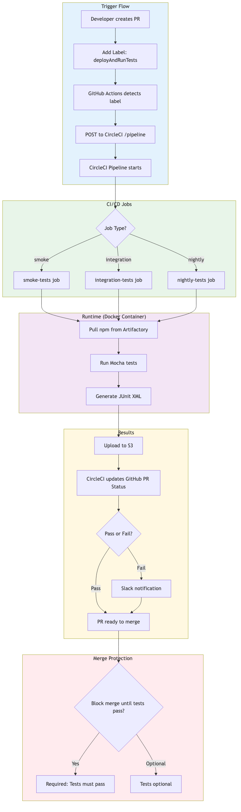

Sammy Shaar
Former Senior SDET II, Compass
Java regression monolith was only maintainable by 2 SDETs
5-7 manual QA engineers couldn't contribute
Testing was a bottleneck for the team
"We couldn't share the testing load because nobody else knew Java."
I was the technical lead for API testing infrastructure
❌ Manual QA had ZERO coding experience
❌ Java monolith was brittle - only 2 people could maintain
❌ No abstraction layer - auth was duplicated everywhere
❌ Platform team owned Thrift definitions - couldn't change endpoints
❌ Needed to ship fast - couldn't rewrite everything
Why these technical decisions?
Example: Login Pattern
// 5 lines to login
const { token } = await auth.login({
email: 'user@test.com',
password: 'password123'
});
// Use token in requests
client.setToken(token);Built a Page Object Model framework on SuperAgent
Abstracted authentication and setup complexity
Created helper functions for common operations
Published as internal npm package
💡 Other ICs (knew JS) contributed within 2 weeks
💡 Manual QA posted crash course on automation + shell basics
Result: Testing load distributed across the team
Owned & Built
Code: api-testing-framework
Adapter Pattern
// adapters/posts.js - Clean API abstraction
const postsClient = axios.create({
baseURL: `${config.baseUrl}/posts`,
timeout: config.requestTimeout,
});
async function getById(id) {
return postsClient.get(`/${id}`);
}
async function create(postData) {
return postsClient.post('/', postData);
}
module.exports = { getById, create, ... };How simple is it to write a test?
A Complete Test (10 lines)
const { handleRequest } = require('api-test-core');
const { posts } = require('api-test-core');
describe('Posts API', () => {
it('should create and retrieve a post', async () => {
// Create test data
const testPost = {
title: 'My Test Post',
body: 'Test content',
userId: 1
};
// Make request (auth handled automatically)
const response = await handleRequest(
posts.create(testPost)
);
// Assert
expect(response.status).to.equal(201);
expect(response.data.title).to.equal(testPost.title);
});
});Helper Functions
// Test data generation
const { generateUserData, generateEmail } =
require('api-test-core');
// Generate unique test user
const user = generateUserData({
email: generateEmail('test'),
firstName: 'John'
});
// → { id, email, firstName, lastName, phone, ... }1. Dev commits to GitHub
2. Label PR: deployAndRunTests
3. GitHub Actions → CircleCI API
4. CircleCI pulls Docker from Nexus
5. Container pulls npm from Artifactory
6. Mocha executes tests
7. JUnit XML → S3
8. GitHub PR updated
GitHub → CircleCI Trigger
// GitHub Actions POST to CircleCI
curl -X POST "https://circleci.com/api/v2/project/..."
-H "Circle-Token: ${CIRCLECI_TOKEN}"
-d '{
"branch": "feature/my-branch",
"parameters": {
"service_name": "api-test-core",
"run_integration_tests": true
}
}'Docker image from Nexus (no deps baked in)
npm packages pulled from Artifactory at runtime
CircleCI jobs: smoke, integration, nightly
JUnit XML uploaded to S3 data lake
GitHub PR status updated automatically
CircleCI Job Definition
jobs:
integration-tests:
docker:
- image: nexus.company.com/api-test-core:2.1.0
steps:
- configure-artifactory
- install-packages
- run-integration-tests
- upload-to-s3
Manual QA had ZERO coding experience
Before: What They Knew
After: What They Learned
Training Approach
Brown Bags
Team-wide awareness
1-on-1 Training
Hands-on sessions
Within 2 weeks, ICs who knew JS were contributing tests.
Testing load distributed across team • Self-service for developers
What Worked
What I'd Do Differently
💡 First Node package — FE team helped with entry point vs folder imports
Questions?
Code & Examples:
github.com/sshaar08/api-testing-framework
Framework, Docker, CircleCI configs, helper functions
github.com/sshaar08/api-testing-slides
These slides